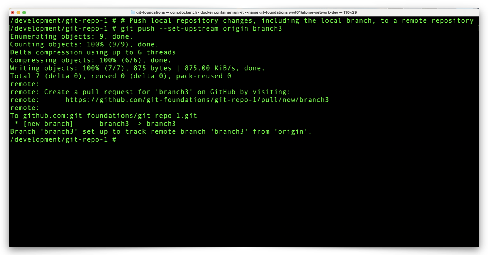

Make Local Git Repository Changes With Atomic Commits
It is possible to commit many, many changes at once although doing so can make it difficult to find individual changes within a commit. Alternatively, atomic commits are those which involve a separate commit for each change. While atomic commits can be more tedious, they provide the benefit of isolating changes to individual commits.
Create and Commit a New Python Script to the Repository
- Let's create a new file, a simple Python script, in our repository. The file will be blank to start, but we will add some code to the file shortly. In one series of commands we will:
- Create a Python script.
- List the contents of the repository
- Review the Git repository status.
touch my_script.py
ls -l
git status

-
Notice the following:
-
The my_script.py file exists and is empty (0 bytes).
-
The my_script.py file is in the Untracked files section of the git status output.
-
Issue commands to:
- Add the my_script.py file to the Git staging area.
- Review the Git repository status.
git add my_script.py
git status

-
Notice that the my_script.py is now in the Changes to be committed section.
-
This indicates my_script.py is now in the Git staging area.
-
Issue commands to:
- Commit the my_script.py file to the local Git repository.
- The -m flag represents the required message that accompanies the commit.
- There are other ways to add a message to a commit, although a message is required for each commit.
- Review the Git repository status.
git commit -m "Initial commit of 'my_script.py'"

- Notice there are no changes to commit. The README.md file does have changes although isn't yet staged for commit; we will work on that shortly.
Add Python Code to the my_script.py File
- To make changes to the my_script.py file, we will add some executable code. Use the following commands to add some Python code:
echo '#!/usr/bin/python' >> my_script.py
echo '# This script says hello' >> my_script.py
echo 'name = input("What is your name? ")' >> my_script.py
echo 'print(f"It is nice to meet you, {name})' >> my_script.py

- View the changes between the copy of my_script.py in the working directory and the local repository with the following command:
git diff

- View the Git status of your local repository with the following command:
git status

- We now have two changed files to stage and commit to the local repository. Issue commands to:
- Move all changed files in the working directory to the staging area.
- Commit the staged changes to the repository.
git add .
git commit -m "Appended line to README.md and added commands to my_script.py"

- View the Git status of your local repository with the following command:
git status

- Notice the working branch, branch3 shows no changes to commit
Push Committed Changes to GitHub
- We now have several atomic commits to our local repository to push to our GitHub repository. Initiate the push with the following command:
git push

- Notice that we receive a fatal error when we attempt the git push - GitHub does not have a branch which matches the working branch in our local repository (branch3).
- Before we can push changes with a simple git push command, we need to create branch3 in GitHub.
- Notice in the output, after the fatal error, Git is friendly enough to display the exact command to both create branch3 in GitHub and then push our atomic commits to GitHub.
- Initiate the push again with the following command:
git push --set-upstream origin branch3

- Notice that Git creates a new branch, branch3, in GitHub, and pushes the local repository branch3 commits to the GitHub branch3.
Next we will take a look at our GitHub repository to review the changes we pushed from our local repository. Click the link below to continue: